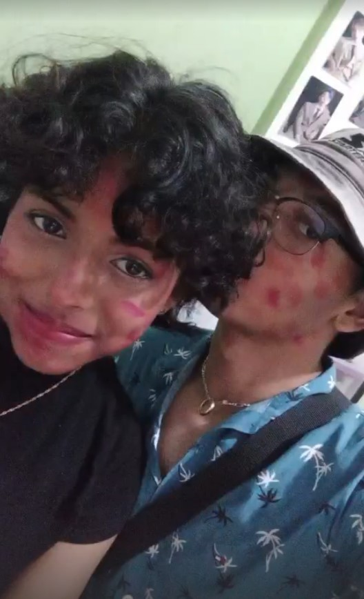

Marilu
Primer año de novios...
¿Cuándo comenzó nuestra historia? ¿un primero de mayo?, qué lindo.
Alguna vez lo dijiste: "No tuvimos que esperar mucho para encontrarnos y pasar una linda tarde". ¿Quién diría que esa no sería nuestra última tarde?, realmente me alegra que haya sido así. Me alegra que hayamos seguido encontrándonos y divirtiéndonos juntos.
Si me pongo a pensarlo, habría sido difícil creer que pocos días después, exactamente el 31 de mayo, empezaría nuestra verdadera historia. Sin importar cuáles fueron las circunstancias, es realmente bonito el saber que ése día tú y yo empezamos a ser algo más que una linda amistad.
Mira, algunas de mis fotos favoritas sobre nosotros:

Nuestros primeros días conociéndonos
Es gracioso que casi el mismo día que empezamos a conocernos, también íbamos a alejarnos KJASDKLJASLKD. Bueno, más que nada, era yo quien se iba a alejar. Bien sabes que desde que te vi por primera vez, yo no quise una simple amistas; quise todo contigo. Pero hubo algo con lo que realmente no contaba... ¿Cómo que ibas a resultar siendo tres años menor que yo? ¿cómo que trece años? T.T
Fue muy gracioso, tendrías que haber visto la reacción que tuve en ese momento. Yo pensaba hasta bloquearte en ese instante.Fue como un pequeño momento de desesperación, ya que yo pensaba que tenías unos 15 o 16 años, así como yo. Sinceramente, lo pensé por bastante tiempo: "pero podemos ser amigos..." "¿debería alejarme de ella?" "¿Lo intento?". Hasta que, pasados unos días, realmente decidí no darme por vencido y seguir contigo. Quizá no como lo quería, pero sí podíamos ser muy buenos amigos.
¿Recuerdas ésta foto? fue una de las primeras que nos tomamos juntos. Es linda y tiene un lindo día tras de ella<3
Conforme iba pasando el tiempo e iba conociéndote más, sentía que mis sentimientos sólo iban en aumento. Cada salida, cada conversación, cada vez que podía mirar esos bellos ojos que parecían contener el universo entero en ellos, yo sólo me iba enamorando más. Hasta que...
El día en que quise hacerlo
Era un día normal como cualquier otro. Ése día me disponía a visitar a nuestra graciosa amiwita de rulitos (que por respeto pienso dejar de lado ésa chistosa historia). Pero antes de eso, fui a verte a ti, estaba tan decidido a contárte cómo me sentía... pero algo me detuvo. No sabría describir que pasó en ese momento, pero fue raro. Cuando llegué bajaste con tu manchita de boli (HJKASDHLAKSD) y nos quedamos en las escaleras. Por dios, te veías tan linda ese día... tus ojitos brillaban mucho cuando los veía. Después de vernos, fui adonde rulitos, quería conversar y saber más cosas. (Ya sabes, cosa de gente que psicoanalisa). Todo resultó muy bien, a decir verdad. Terminé sabiendo muchas cosas que fueron bastante útiles y otras que a día de hoy me siguen causando risa. Perdón, me las di de detective en ese momento. Camila fue muy fácil, no disimulaba absolutamente nada. Era obio que me iba a responder y a confesar cosas de manera verbal o no verbal.
Cuando terminé de hablar con rulitos y me dirigía hacia mi casa, empezó a llover nuevamente KASKJASLKÑDLKAS, me mojé. Me confesó varias cosas (chismocita también).
Ese día decidí quedarme quieto hasta que todo estuviese más calmado y seguro.
¿Qué podría salir mal?
Ambos estábamos en clases. Yo sé que yo estaba muy aburrido y desanimado. El profesor me mandó a hacer unas cosas con la directora, pero como ella estaba ocupada, me quedé esperando mientras estaba sentado en las escaleras.
Estaba tan aburrido y te extrañaba tanta, que quise escribirte para pasar el rato contigo, ya que todo siempre fue muy divertido. Sinceramente, en ese momento no sabía cómo me sentía, sólo estaba existiendo. Todo lo hacía en modo automático.
Abrí nuestro chat, y procedí a hablarte de mis sentimientos hacia ti, te conté lo mucho que me estabas gustando y lo tan bien que me hacías sentir. Tal parece que todo iba siendo mutuo. Fue muy lindo liberar tanto...
Lindos novios<3
DECIDIMOS INTENTARLO
Qué bello fue ese primer abrazo que nos dimos como noviecitos: Tú y yo en el centro comercial, corriendo hacia el otro para sentir la calidez de cada uno y la fuerza de nuestros brazos. Ese día realmente fue muy lindo.
ACABO DE RECORDAR QUE EL PRIMER DÍA ME DIO PENA DARTE UN BESITO ASKDLJLKJDASLKÑJDASL
Recuerdo que te lo dije por whatsapp, y cuando nos volvimos a ver, entramos a la casa, fuimos a la cocina, nos "escondimos" de mi madre y me diste un besito (waaaaa, realmente se sintió muy bonito >< mi corazoncito latía a mil en ese momento)
Cada día que podíamos vernos, veíamos películas (algunas malas JKASDLKJLASKD) y recuerdo que bro cristian se la pasaba con nosotros en la habitación. Para ser más específicos, en la esquina de la cama ASJDLKJASDLÑKJASDJLK. Omg, recuerdo ese día de las palomitas, en el que bro cristian hizo sendo desastre, sin embargo, fue divertido. Si mal no estoy, veíamos una película asiática sobre una muchacha y un muchacho, y el muchacho al final creo que perdió la memoria, o no sé si fue la muchacha JJLKDLAKLKD. El tema es que la vimos mientras comíamos palomitas